¿Cómo es Costa Rica? Naturaleza, seguridad y vida cotidiana contadas por un exresidente
Costa Rica, un pequeño país de Centroamérica. A pesar de tener una superficie equivalente a las islas japonesas de Kyūshū y Shikoku juntas (51.100 km²), alberga aproximadamente el 5% de las especies del mundo.

Cómo visitar el Volcán Irazú: el día en que no pude ver la laguna del cráter
Un viaje al volcán que aparece en el escudo de Costa Rica. Tras un viaje en bus de dos horas para ver la famosa laguna verde esmeralda, no había nada.

Navidad y Año Nuevo en Costa Rica: tamales, pólvora y el Festival de la Luz
La temporada navideña en Costa Rica — el desfile del Festival de la Luz, los tamales hechos en familia, las corridas de toros y la pólvora interminable para recibir el año.

La Escuela Japonesa de Costa Rica y The Color Run: niños y fiesta en San José
Una visita al día deportivo de la Escuela Japonesa de San José y el Color Run que llenó de color las calles de la capital.

Parque Nacional Manuel Antonio: Costa Rica en Semana Santa
Un viaje en Semana Santa desde San José al Parque Nacional Manuel Antonio: perezosos, monos y playas llenas de turistas en vacaciones.

Comida costarricense y centroamericana: gallo pinto, ceviche, rice and beans
Una guía de los platos que probé por Centroamérica — ceviche, gallo pinto, rice and beans — con receta para preparar gallo pinto en casa.

Trabajando como fisioterapeuta en Costa Rica: un paciente que volvió a caminar con una férula casera
Trabajando en una clínica en el sur de Costa Rica, armé una órtesis tobillo-pie con sandalias, almohadillas de béisbol y un poste metálico por unos 8.000 yenes — y un paciente con ictus volvió a caminar con ella.

Caño Negro y Monteverde: un viaje de fin de año tras la fauna silvestre
Un viaje de fin de año del Refugio de Vida Silvestre Caño Negro al Bosque Nuboso de Monteverde — tour en bote, perezosos, momotos, monos cariblancos y un tour nocturno con ranas y serpientes.
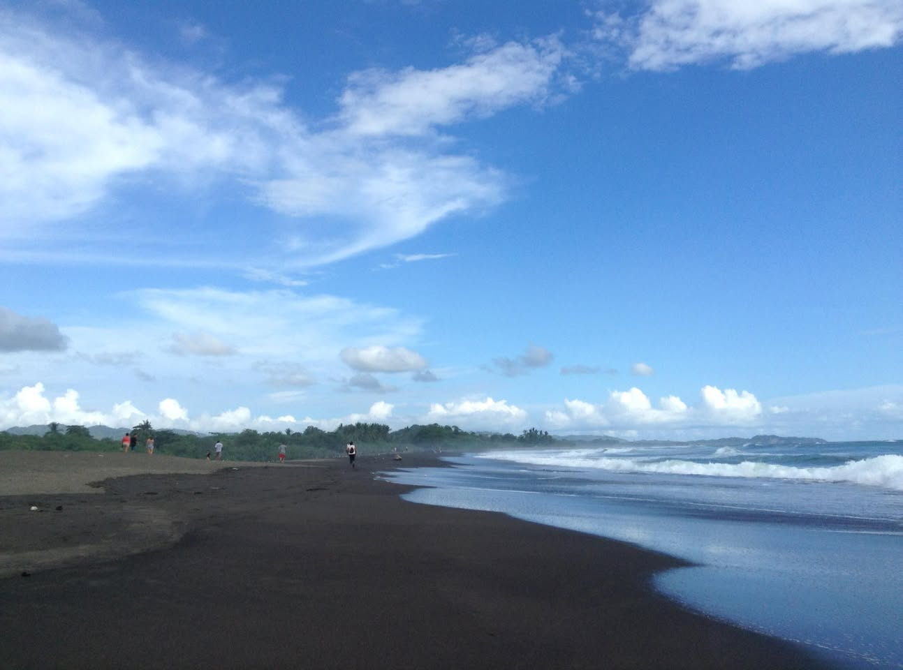
A Ostional por la Arribada: el día en que llegué tarde al desove masivo de las loras
Un viaje en bus de 14 horas por Costa Rica para ver miles de tortugas loras desovando — y llegar una semana tarde.

Volviendo a Costa Rica después de 10 años: una San José cambiada y la misma Pilsen
Un viaje a Costa Rica en 2025, diez años después de haber vivido allá como voluntario JICA. San José había cambiado; la Pilsen y la Imperial, no.

Cruzando la frontera de Costa Rica a Nicaragua: en TICA BUS a la Isla de Ometepe
Mi primer paso por una frontera centroamericana: TICA BUS de Costa Rica a Nicaragua y, desde San Jorge, ferry a la volcánica Isla de Ometepe.

Un día por la Isla de Ometepe: Ojo de Agua y los lugares de la isla volcánica
Llegué a la Isla de Ometepe la tarde del sábado. Como el domingo no hay buses, contraté un guía por unos US$40 — caro a primera vista, pero mucho más eficiente que cruzar la isla solo en mototaxi.

Caminando por Granada: la Nicaragua colonial y la tienda de cuero Soy Nica
Salgo de la Isla de Ometepe en el ferry de las 6 a.m. y voy hacia Granada, una de las ciudades coloniales más antiguas de Centroamérica. Catedrales, el Convento San Francisco, vigorón, Toña, y la tienda de cuero que por sí sola justifica el viaje a Nicaragua.

Managua y Masaya: mercado de artesanías y reencuentro con amigos en la capital de Nicaragua
Dejé Granada y, camino a la capital Managua, paré en el pueblo artesanal de Masaya. Hamacas y cerámica en el mercado — y una cena japonesa con viejos amigos.

Caminando por León: la memoria sandinista y la ciudad de Rubén Darío
Un bus de larga distancia desde Managua hasta León, en el norte de Nicaragua. León significa, claro, lo que significa, y un león de piedra está frente a la catedral. Memoria sandinista, la casa de Rubén Darío, la Galería de Héroes y Mártires, y un almuerzo de langosta.

Visita a la destilería Flor de Caña: probando el ron de Nicaragua
El día antes de salir de León, tomé un bus solo hasta Chichigalpa — el pueblo donde está Flor de Caña, uno de los rones emblemáticos de Centroamérica. Una destilería fundada en 1890, barricas de roble, y una cata de 20 años que me hizo cambiar de opinión sobre el ron.

Centro Histórico de Ciudad de México: caminando por el Zócalo, el Templo Mayor y la Catedral
Un recorrido por el Centro Histórico de Ciudad de México: el Zócalo, la Catedral Metropolitana sobre cimientos aztecas, las ruinas del Templo Mayor y el art nouveau del Palacio Postal.
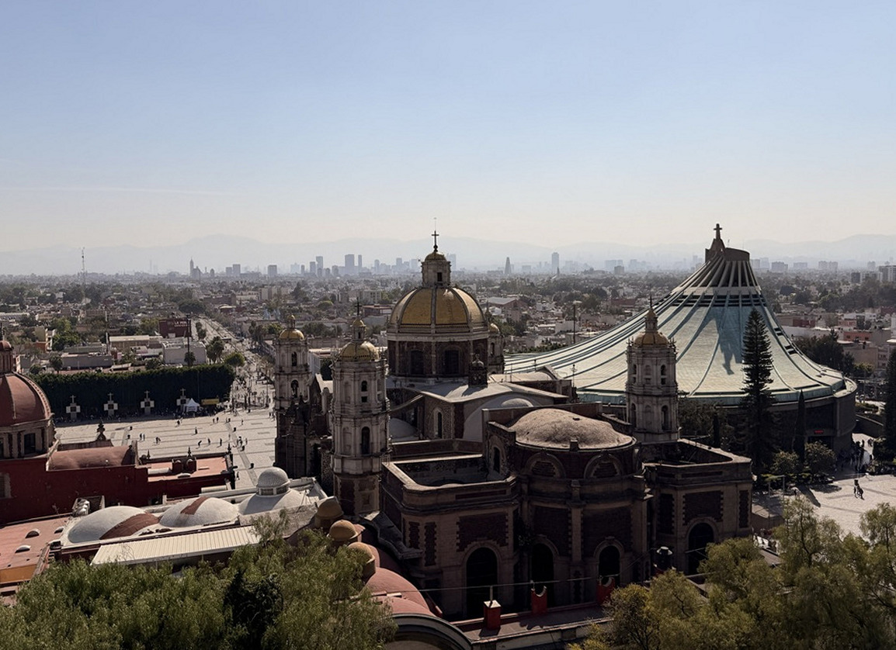
La Basílica de Guadalupe: el Cerro del Tepeyac y el milagro de la tilma
La Basílica de Nuestra Señora de Guadalupe recibe a decenas de millones de peregrinos al año y es uno de los santuarios católicos más visitados del mundo. Después de dos años en Costa Rica me había quedado con curiosidad por la mezcla de fe católica e indígena en Latinoamérica — este lugar tenía que verlo.

Caminando por Ciudad de México: Monumento a la Revolución, desayuno local y arte callejero
Ciudad de México es demasiado grande para vivirla solo saltando de un atractivo turístico a otro. En las calles laterales hay puestos de desayuno, muros cubiertos de grafiti y vendedores bajo lonas — una cara de la ciudad que las guías no muestran.

Souvenirs de México: Walmart, el lugar inesperado
Las tiendas de souvenirs son caras y de calidad irregular. La opción que sorprende es el supermercado local. En la Ciudad de México hay Walmart por todas partes — perfecto para una compra final de regalos antes de volar.
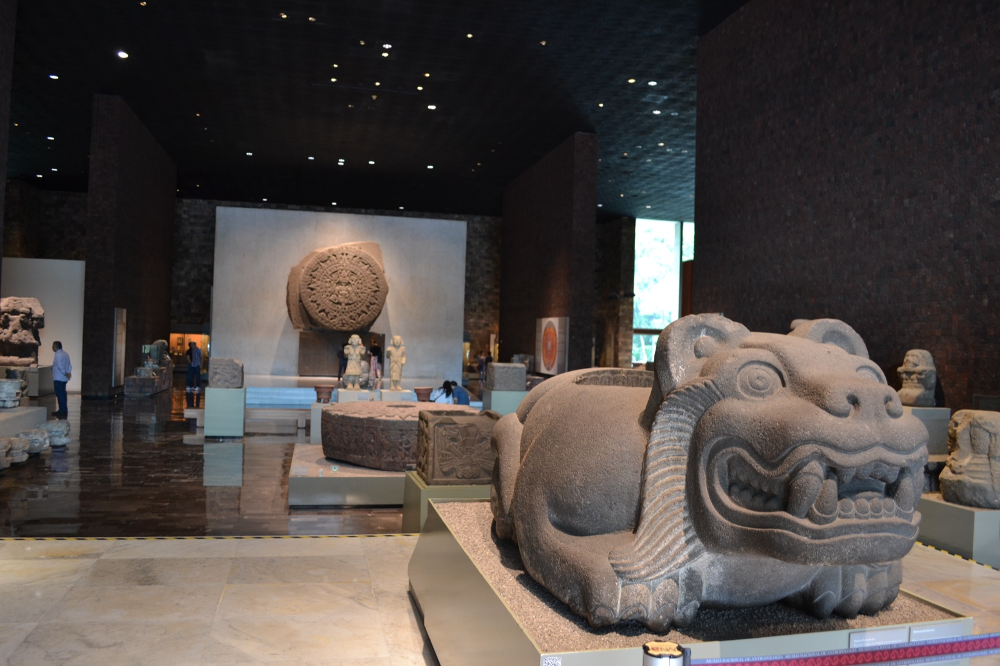
El México Antiguo en el Museo Nacional de Antropología: Piedra del Sol, Coatlicue y Cabezas Olmecas
Mi primer viaje a México. En la capital, a 2.240 m de altitud, lo primero que visité fue el Museo Nacional de Antropología: la Piedra del Sol, Coatlicue y las cabezas colosales olmecas, todo a un cristal de distancia.

Guanajuato, "la Ciudad Joyero": el Pípila de Noche, el Callejón del Beso y el Museo de las Momias
Guanajuato, ciudad Patrimonio de la Humanidad a 2.000 m, donde casas multicolores trepan por las laderas como un joyero. La vista nocturna desde el Pípila, la leyenda del Callejón del Beso y la sorprendente historia detrás del Museo de las Momias.
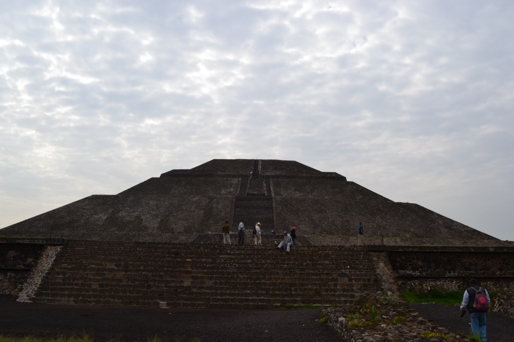
Caminando por las Ruinas de Teotihuacán: Pirámide del Sol, Pirámide de la Luna y Templo de Quetzalcóatl
A unos 50 km al noreste de la Ciudad de México, la antigua ciudad de Teotihuacán floreció desde antes de nuestra era. La Pirámide del Sol, la Pirámide de la Luna, la Calzada de los Muertos y el Templo de Quetzalcóatl — un día caminando una de las ciudades ceremoniales más grandes de Mesoamérica.
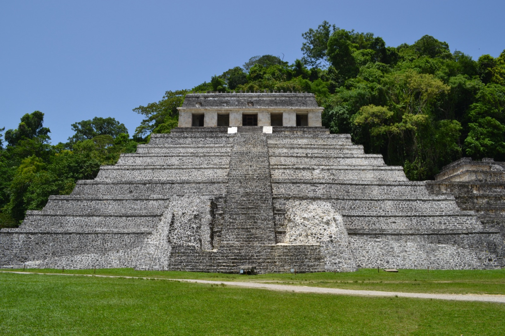
Palenque, la ciudad maya en la selva: Templo de las Inscripciones, tumba de Pakal y el Grupo de las Cruces
Vuelo nacional de la Ciudad de México a Villahermosa, y de ahí por carretera a Palenque. El Templo de las Inscripciones — que guarda una de las tumbas reales mayas más grandes —, El Palacio con su torre de observación y el Grupo de las Cruces. Caminando por Palenque, donde la selva está a medio comerse las ruinas.
Caminando por Santiago: la Corte Suprema, museos y Centro Histórico de Chile
Mi primera vez en Sudamérica. Caminando por Santiago: el Palacio de los Tribunales, arquitectura neoclásica y arte contemporáneo bajo ese cielo andino increíblemente azul.

Mercado Artesanal Los Dominicos: artesanías y la iglesia blanca de Santiago
Visita al Centro Artesanal Los Dominicos, en el barrio de Las Condes en Santiago. La obra de los artesanos locales y la iglesia colonial blanca al lado hicieron una tarde hermosa.

Último día en Santiago: Palta Reina y caminatas pre-navideñas
Último día en Chile. Un almuerzo de Palta Reina — palta rellena de pollo — y un paseo por un mall ya decorado para Navidad.
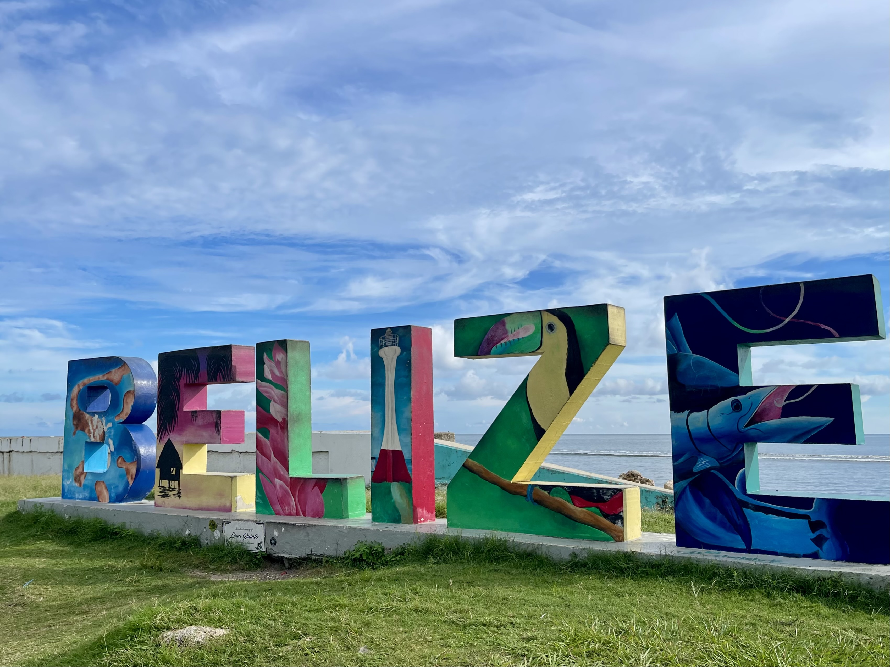
Llegando a Belize City: amanecer caribeño y un paseo por supermercados asiáticos
Tras el cielo seco de Chile, aterrizar en Belice: el Caribe al amanecer, inglés como idioma oficial y comida japonesa en supermercados chinos.

Cayo Caulker y vuelo panorámico al Gran Agujero Azul: Belice desde el aire
Un día en Cayo Caulker, la isla

Caminando por Belize City: el Swing Bridge y un último día
Un último día en Belize City, frente al histórico Swing Bridge y reflexionando sobre un país que mezcla el Caribe con Centroamérica.

Visitando Panamá Viejo: ruinas de 500 años e historia colonial española
Panamá Viejo, la primera Ciudad de Panamá, fundada en 1519 por colonos españoles y quemada en 1671. Sus ruinas de piedra hoy se alzan frente al horizonte moderno de la ciudad.

Caminando por el Casco Viejo y el Mercado de Mariscos: el casco antiguo Patrimonio de la Humanidad y el mercado de pescado
Ciudad de Panamá tras Panamá Viejo: el Mercado de Mariscos (construido con ayuda japonesa), el Casco Viejo (UNESCO) y el Museo del Canal.

Visitando las esclusas de Miraflores: el momento en que un barco enorme atraviesa el Canal de Panamá
Una visita a las esclusas de Miraflores, en el lado pacífico del Canal de Panamá, viendo cómo el carguero JIUYANG BLOSSOM se ajusta entre los muros.

Joya de Cerén y Tazumal: el Patrimonio de la Humanidad y las ruinas mayas de El Salvador
Visita a un amigo voluntario JICA en El Salvador: el sitio UNESCO de Joya de Cerén (la
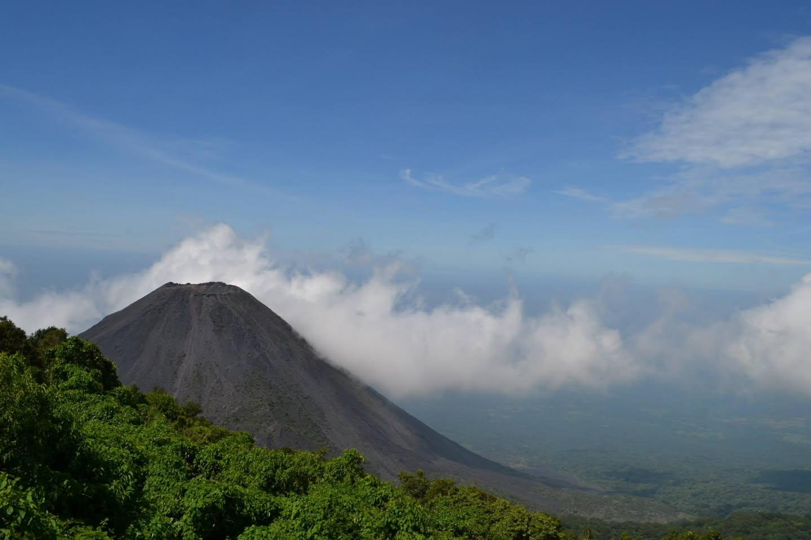
Subiendo al Volcán Santa Ana: una caminata a la laguna del cráter con escolta policial
Subir el Volcán Santa Ana — la montaña más alta de El Salvador — para ver su laguna verde esmeralda, con escolta policial en el sendero y el Volcán Izalco al fondo.

Ruta solitaria por Chiba en XSR900: Kasamori Kannon y los caminos de montaña de Bōsō
Una ruta primaveral por Chiba en la XSR900. El destino: Kasamori Kannon, un templo construido sobre una formación rocosa con un estilo arquitectónico único en Japón.
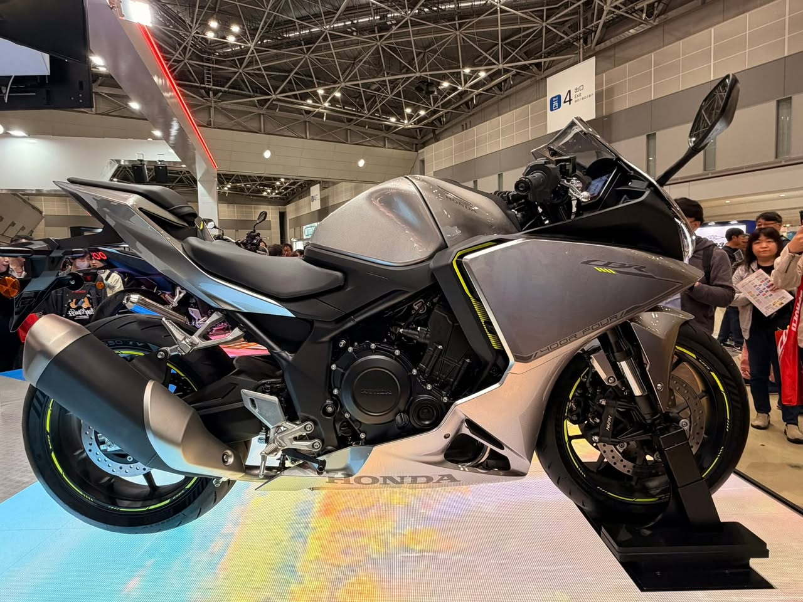
Tokyo Motorcycle Show 2026: motos y alforjas que me llamaron la atención
Una alforja AMBOOT, la CBR400R FOUR, una CT125 customizada. Lo que me quedó tras recorrer el Tokyo Motorcycle Show 2026.
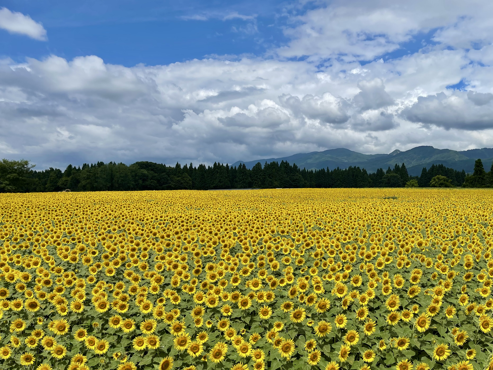
Dos días de verano en Niigata: el campo de girasoles de Tsunan y los fuegos de Nagaoka
Día uno en el campo de girasoles de Tsunan, día dos en los Fuegos Artificiales de Nagaoka. Dos días de verano en Niigata concentrados.
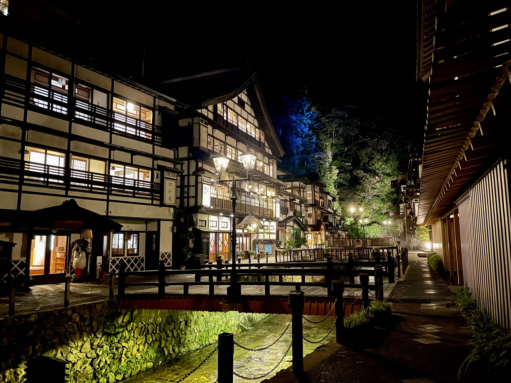
Zao y Ginzan Onsen, dos días: lago del cráter Okama, baño al aire libre en el bosque y una noche de era Taishō
Dos días en Yamagata. El gran baño al aire libre de Zao, el inquietante lago volcánico Okama y la vista nocturna de Ginzan Onsen — una calle termal que parece salida de una postal de la era Taishō.

Visitando el estratotipo del Chibaniense: un día en moto por Chiba con un jabalí y la luz de motor encendida
Llevé la moto al afloramiento del Chibaniense, en Ichihara (Chiba) — la capa de inversión geomagnética que dio nombre a un tramo de la historia de la Tierra. Me crucé con un jabalí, se me clavó algo en la rueda trasera y se encendió la luz del motor, por si fuera poco.
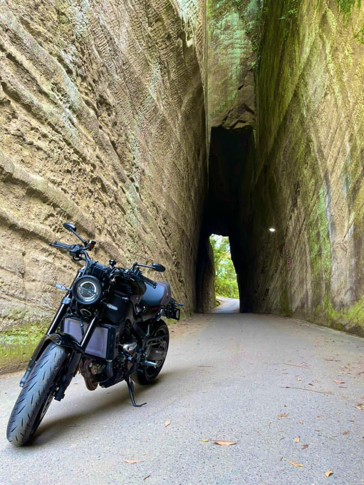
El túnel cortado en la roca de Tōrōzaka Daishi: regreso al spot fotogénico de Chiba en la XSR900
El túnel cortado en la roca de Tōrōzaka Daishi, en Futtsu (Chiba). Tres años después de mi primera visita en SR400, volví en XSR900. La moto cambió; el túnel no.
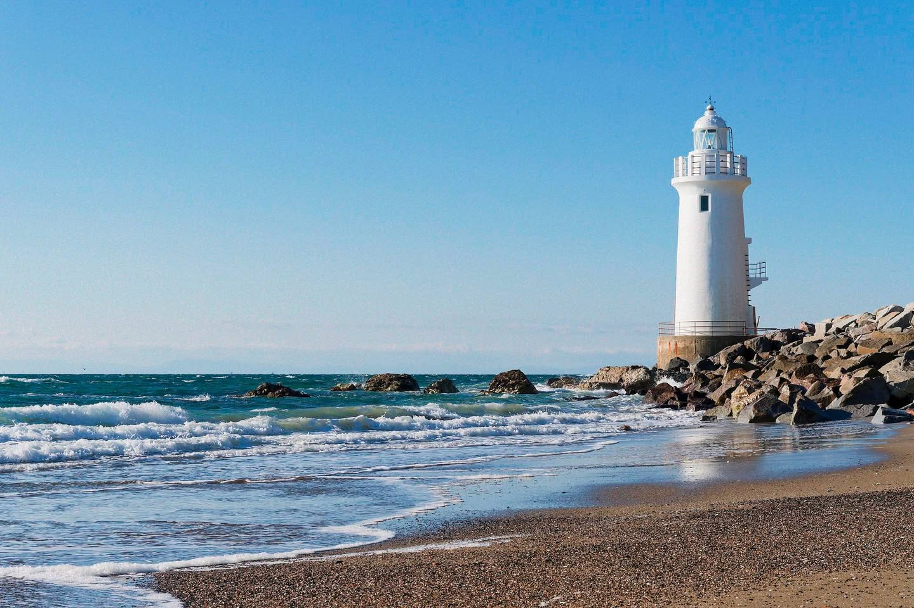
Cabo Irago en solitario: caminata costera de fin de año y mucho viento en Aichi
Fin de año, fui al cabo Irago en Aichi. Caminé bajo un viento serio, y me fui con ganas de probar las almejas bakagai que al final no comí.

Ruta de dos días por la península de Izu: Ashinoko Skyline y la ruta del oeste
Una ruta de dos días por la península de Izu en una XSR900. Sin un tema fuerte, pero el segundo día por el Ashinoko Skyline justificó el viaje por sí solo.
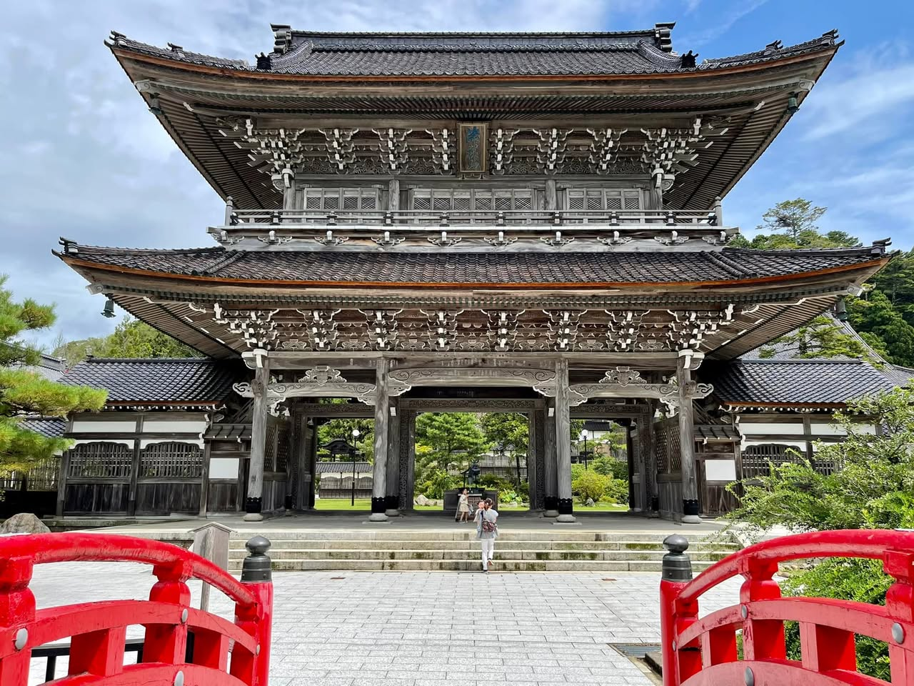
En moto por la península de Noto: el templo Sōji-ji Soin y el sashimi con pan de oro
Agosto de 2022 — recorriendo la península de Noto en moto. La puerta del templo Sōji-ji Soin imponente, y en una izakaya de Kanazawa el sashimi llegó con pan de oro encima. La comida en Ishikawa fue buena en general.

Caminando por las 'lagunas de cinco colores' Goshikinuma, en Urabandai (Fukushima)
En Kitashiobara, prefectura de Fukushima, Goshikinuma es el nombre colectivo de un grupo de lagunas en Urabandai. Cada una tiene un color distinto — verde esmeralda, azul cobalto, azul lechoso — y la superficie cambia según el ángulo y el tiempo.

En moto por la Bandai-Azuma Skyline: zona volcánica en Fukushima
La Bandai-Azuma Skyline (Ruta 115) en Fukushima es una de las rutas en moto sobre volcán más conocidas de Japón. Se rueda por una meseta a más de 1.600 m, con paisaje volcánico árido y panorámicas amplias de montaña — recorrida en SR400 y en XSR900 en distintos viajes.

Instalando un Power Beam en la SR400: reducción de vibraciones en ruta larga
Una de las quejas habituales de los SR400 es la vibración en rutas largas. Después de unos 300 km de ida, las dos manos me quedaron dormidas.
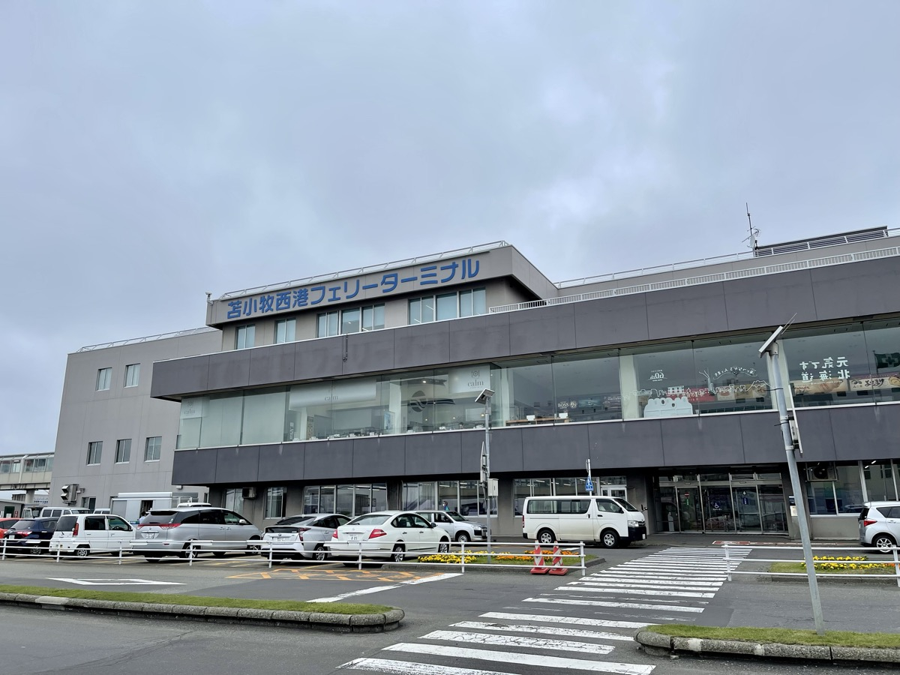
De Ōarai a Tomakomai en el ferry Sunflower: primer día en Sapporo [SR400 Hokkaidō ①]
Hokkaidō en solitario en una SR400. Ferry Sunflower de Ōarai a Tomakomai y, ya en Sapporo, el Edificio de Ladrillo Rojo y el ramen Ichiryūan. Junio de 2021.
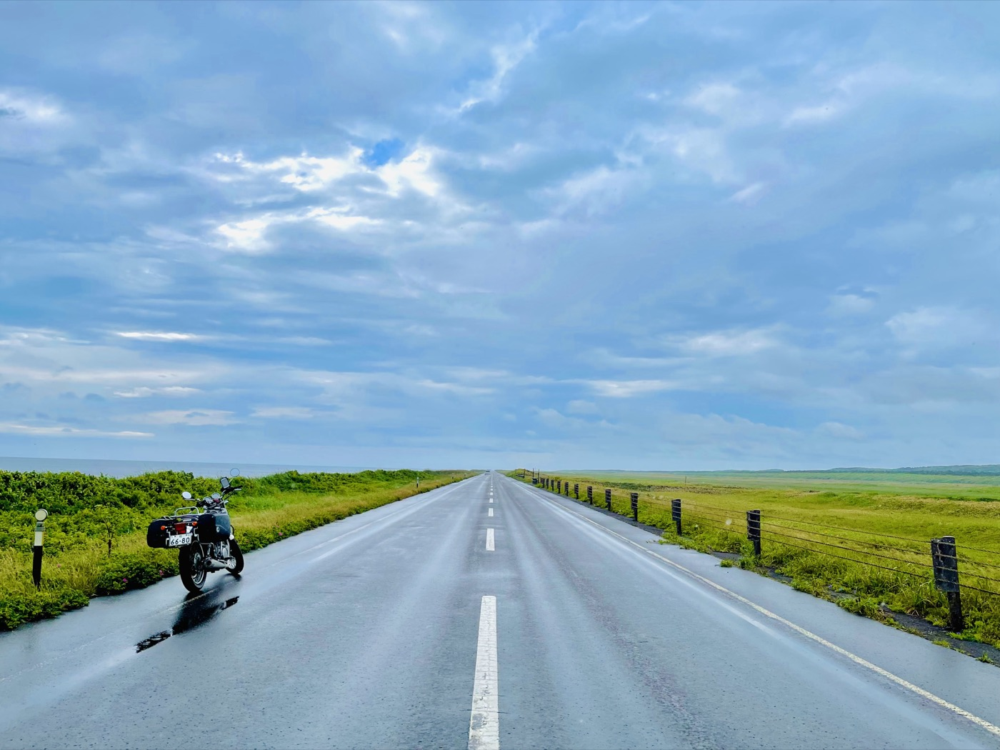
De Sapporo a Wakkanai por Ishikari y la línea Ororon [SR400 Hokkaidō ②]
De Sapporo al norte por Ishikari, parada en la estación Airoad Atsuta, ikura-don en Obira-Nishin-Banya y por la línea Ororon hasta los aerogeneradores de Teshio y la cúpula de Wakkanai.

Cabo Sōya, camino blanco, línea Esanuka
Desayuno con uni-ikura don en Wakkanai, el camino blanco y el cabo Sōya en el extremo norte de Japón, la línea Esanuka que casi me hizo llorar. Esa noche, en Monbetsu, subiendo a la Okhotsk Sky Tower a ver las estrellas, me topé cara a cara con un Higuma. Día 3 de la SR400 por Hokkaidō.
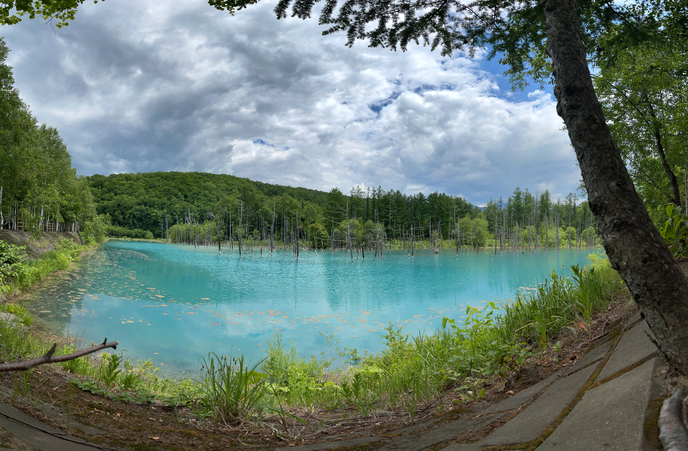
De Monbetsu a Biei: Estanque Azul y la ruta Patchwork [SR400 Hokkaidō ④]
Desde Monbetsu, parada en Saerubu-no-oka (Kamifurano) y luego Biei: Estanque Azul, árbol Ken & Mary y ruta Patchwork. Un día encadenando los iconos de Hokkaidō.
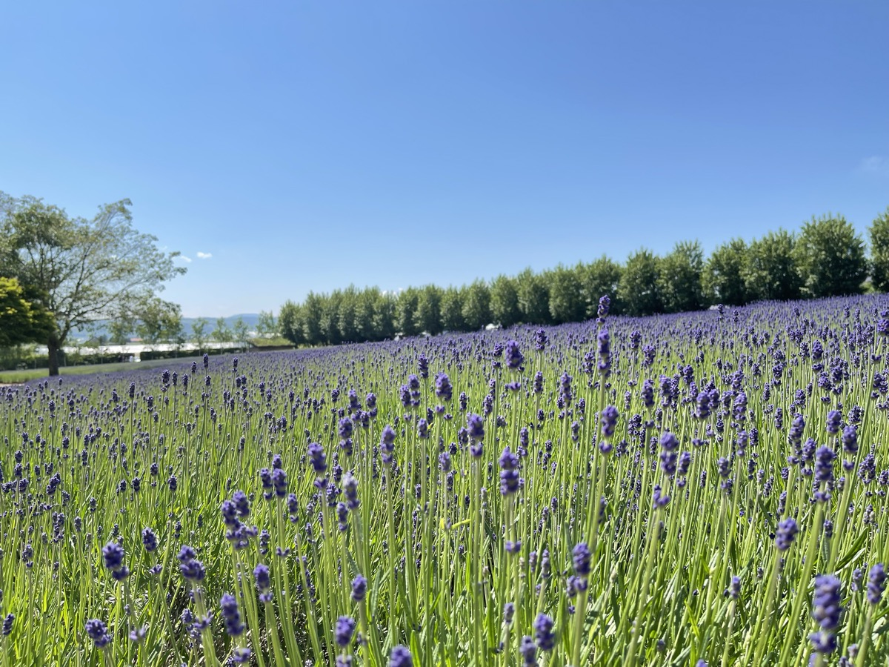
Farm Tomita (Furano) a Tomakomai: ferry Sunflower de vuelta a Ōarai [SR400 Hokkaidō ⑤]
Salida de Biei, lavanda y helado de lavanda en Farm Tomita, melón Yūbari en un área de servicio y, ya en Tomakomai, un último kaisen-don antes de embarcar en el Sunflower. Último día del viaje en SR400.
![De Ōarai a Tomakomai en el ferry Sunflower [XSR900 Hokkaidō ①]](../images/hokkaido-xsr900/20250819_070951847_iOS.jpg)
De Ōarai a Tomakomai en el ferry Sunflower [XSR900 Hokkaidō ①]
Rumbo a Hokkaidō en una XSR900. Embarcando en el Sunflower en el puerto de Ōarai con destino a Tomakomai. Cuando zarpó el barco, empezó el viaje.
![De Tomakomai a Obihiro: museo ainu de Nibutani y buta-don de Tokachi [XSR900 Hokkaidō ②]](../images/hokkaido-xsr900/20250820_054937983_iOS.jpg)
De Tomakomai a Obihiro: museo ainu de Nibutani y buta-don de Tokachi [XSR900 Hokkaidō ②]
Bajada del ferry en Tomakomai, parada en el santuario Yoshitsune y en el Museo de Cultura Ainu de Nibutani (Biratori), y final en Obihiro con un buta-don en Ippin.

Ruta del este de Hokkaidō
De Obihiro a Nemuro pasando por Kushiro. Marisco en el Kushiro Suisan Center, parada inesperada en la destilería Akkeshi y ostras, faro del cabo Nosappu y cangrejo en Nemuro.
![Touring por el este de Hokkaidō: del cabo Nosappu a Shiretoko Five Lakes [XSR900 Hokkaidō ④]](../images/hokkaido-xsr900/20250822_073520142_iOS.jpg)
Touring por el este de Hokkaidō: del cabo Nosappu a Shiretoko Five Lakes [XSR900 Hokkaidō ④]
Por la mañana, vuelta al cabo Nosappu y al museo de los Territorios del Norte; después, hacia el norte hasta Shiretoko Five Lakes y el Camino al cielo, esa recta de 28 km que da nombre al lugar.
![De Aomori a Hakodate en Shinkansen: paseo nocturno por la ciudad [Viaje en coche por Hokkaidō ①]](../images/hokkaido-car/hakodate-night-view-2022.jpg)
De Aomori a Hakodate en Shinkansen: paseo nocturno por la ciudad [Viaje en coche por Hokkaidō ①]
Un viaje de 3 noches y 4 días por Hokkaidō en agosto de 2022 empieza con un Shinkansen de Aomori a Hakodate. Vistas nocturnas desde el monte Hakodate, Lucky Pierrot y Hakodate Beer.
![Monte Yōtei, destilería Nikka Yoichi y canal de Otaru [Viaje en coche por Hokkaidō ②]](../images/hokkaido-car/mt-yotei.jpg)
Monte Yōtei, destilería Nikka Yoichi y canal de Otaru [Viaje en coche por Hokkaidō ②]
El día 2 sale de Hakodate, contempla el monte Yōtei (Ezo Fuji) y el mirador del monte Kenashi, visita la destilería Nikka Whisky Yoichi y el Space Dome, y termina en Otaru.
![Ruta por la península de Shakotan: Bikuni Ōgon-misaki, cabo Kamui y un cuenco de erizo en Kiyozushi [Viaje en coche por Hokkaidō ③]](../images/hokkaido-car/kamui-misaki-pano.jpg)
Ruta por la península de Shakotan: Bikuni Ōgon-misaki, cabo Kamui y un cuenco de erizo en Kiyozushi [Viaje en coche por Hokkaidō ③]
Día 3, ruta por la península de Shakotan. Bikuni Ōgon-misaki, el «azul de Shakotan» en el cabo Kamui y un uni-ikura don en Kiyozushi sucursal de Bikuni.
![Mercado matutino de Hakodate, Goryōkaku y monumento «Primer paso en Hokkaidō» [Viaje en coche por Hokkaidō ④]](../images/hokkaido-car/goryokaku.jpg)
Mercado matutino de Hakodate, Goryōkaku y monumento «Primer paso en Hokkaidō» [Viaje en coche por Hokkaidō ④]
Último día de la ruta en coche: mañana en el mercado matutino de Hakodate con pesca de calamares, el Goryōkaku con su forma de estrella, Lucky Pierrot por segunda vez y el monumento «Primer paso en Hokkaidō».
Lista de equipo para Hokkaidō: 2.400 km probando lo imprescindible [Equipo ①]
El equipo que de verdad importó tras dos rutas en moto por Hokkaidō. Bolsas, ropa, lluvia, camping, antiosos y gadgets, por categorías.
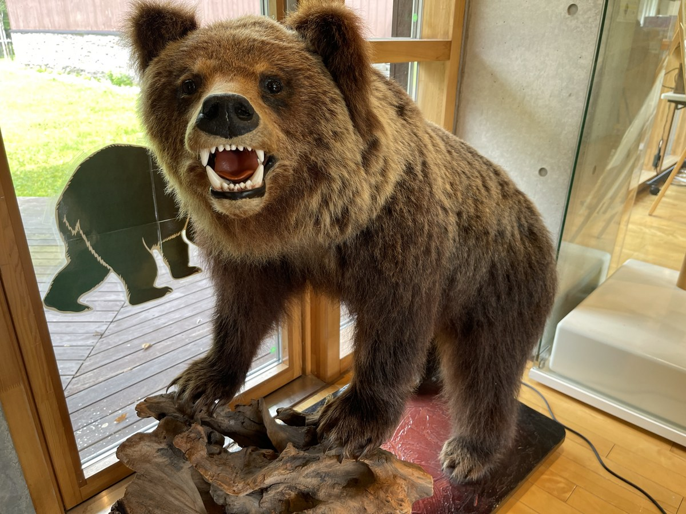
Por qué llevar spray antiosos en una ruta por Shiretoko: UDAP 12HP [Equipo ③]
A la entrada de la península de Shiretoko hay un cartel oficial: «Se recomienda llevar spray antiosos». Lo que aprendí sobre los osos pardos en una ruta por Hokkaidō y el UDAP 12HP que me llevé.

Tres viajes a Hokkaidō: rutas y alojamientos en SR400, coche y XSR900
Resumen de tres viajes por Hokkaidō: dos en moto y uno en coche. Rutas, alojamientos y lugares destacados, con mapas.

Reseña del Mori-no-Makiba Auto Campground: camping solo en invierno, precios y ambiente
A mediados de diciembre, escapando del barullo de fin de año, probé por primera vez un camping de pago. Mori-no-Makiba Auto Campground, en Sodegaura (Chiba): un antiguo prado convertido en camping.
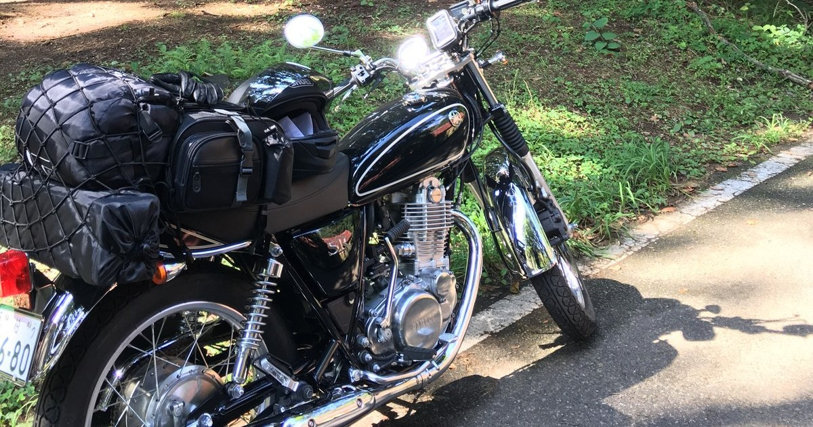
Equipo para acampada en moto en solitario: tienda, saco y aislante [Equipo de camping ①]
«Vale, este año me voy de camping en moto»: equipé todo desde cero. Después de dos salidas en solitario, reseñas del equipo realmente probado en el campo.
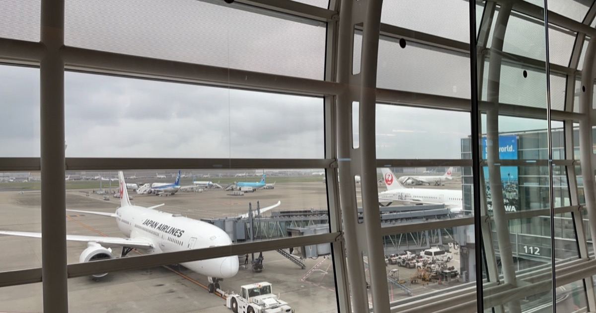
Sobrevivir a un vuelo de larga distancia: pequeños trucos para hacer la clase económica algo más cómoda
Cosas pequeñas para llevar a bordo que hacen un vuelo de larga distancia en económica notablemente menos pesado. Almohada cervical inflable (Tabine), audífonos con cable (final E3000) con adaptador de 2 pines, AirFly Pro, toallitas con alcohol para los lentes de contacto, zapatos 2 en 1 con talón pisable (KEEN HOODMOC HS), y un set de dos maletas Samsonite + LOJEL — basado en experiencia real.

Sake caliente en casa: Manjukagami F60 y Hakkaisan Yukimuro 3 años
Llegó una ola de frío. Una noche así pide sake caliente — y no sin más en el microondas, sino bien calentado. Compré dos botellas para hacerlo como toca.

Cómo elegir un diccionario de español: papel, electrónico o app, visto desde Centroamérica
Cuando se aprende español, elegir bien el diccionario importa más de lo que parece. Después de usarlos a diario viviendo en Centroamérica, estos son los tres puntos a sopesar.